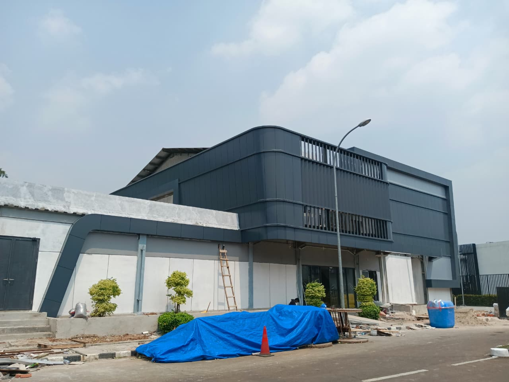
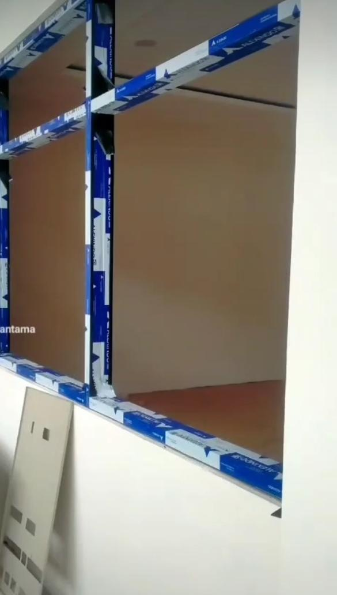
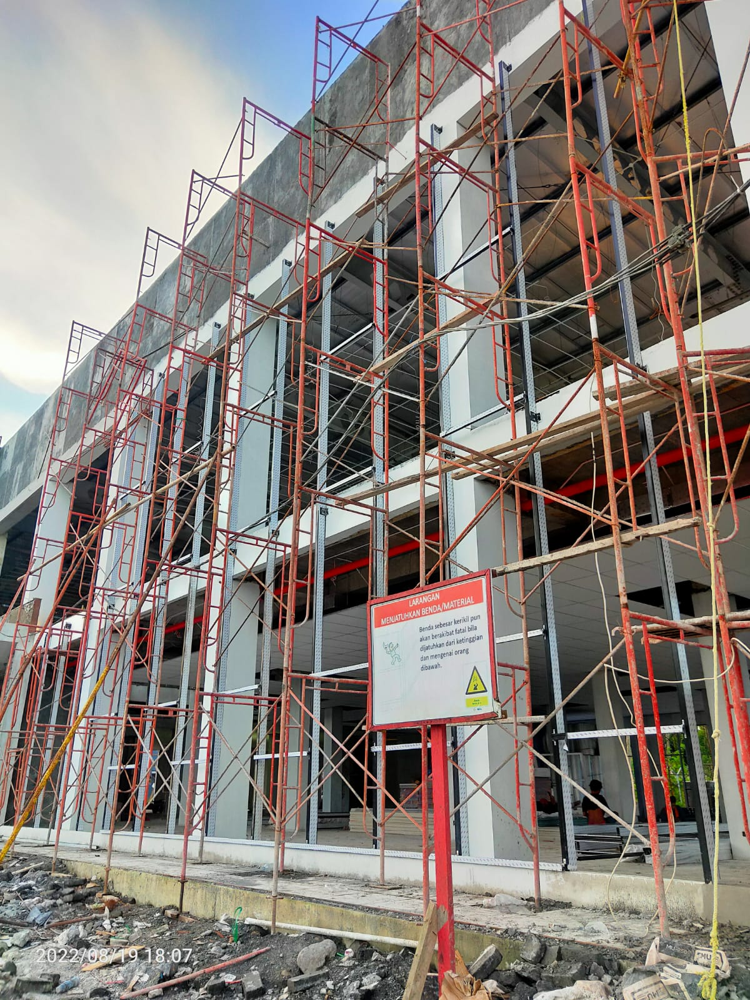
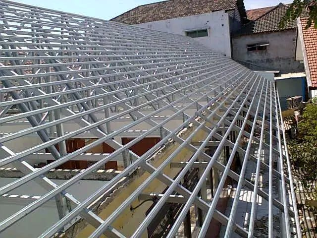

ACP FAÇADE
Data Center
Bogor
2026
Pemasangan Facade gedung Data Center Bogor
CONSTRUCTION
CIVIL & FAÇADE APPLICATION
ACP · Kusen Aluminium & Kaca · Curtain Wall · Rangka Atap Baja Ringan
ANDRIANTAMA CONSTRUCTION berfokus pada pekerjaan konstruksi, façade, dan instalasi dengan mengutamakan ketepatan pekerjaan serta hasil akhir yang rapi.
Pekerjaan yang ditangani meliputi kusen aluminium dan kaca, ACP façade, curtain wall, rangka atap baja ringan, plafon PVC/Gypsum, serta pekerjaan sipil pendukung.
Pengalaman di lapangan mencakup proses pengukuran, persiapan material, fabrikasi, instalasi hingga sealing dan finishing.
Measurement
Fabrication
Installation
Finishing
Pekerjaan kusen aluminium, pintu, jendela dan instalasi kaca.
Cutting, bending, fabrication, installation dan finishing ACP.
Pekerjaan curtain wall dan sistem façade eksterior bangunan.
Pekerjaan rangka atap baja ringan dan instalasi pendukung.
Pekerjaan sipil dasar yang mendukung kebutuhan proyek.
Instalasi plafon PVC dan gypsum untuk kebutuhan interior bangunan.

Bogor
2026
Pemasangan Facade gedung Data Center Bogor

Sidoarjo
2023
Renovasi interior kantor KPPN Sidoarjo

Jawa Tengah
2024
Pemasangan Facade CW

Gresik
2017
Renovasi atap sekolah menggunakan baja ringan
Survey lokasi dan pengukuran area pekerjaan secara langsung.
Persiapan material, alat, modul dan kebutuhan pekerjaan.
Proses cutting, bending, dan fabrikasi material.
Pemasangan komponen dan material pada area proyek.
Pengerjaan sealant pada sambungan dan area façade.
Pemeriksaan, pembersihan, dan penyelesaian akhir.
Memiliki proyek atau membutuhkan pekerjaan façade dan konstruksi? Hubungi kami untuk mendiskusikan kebutuhan pekerjaan Anda.